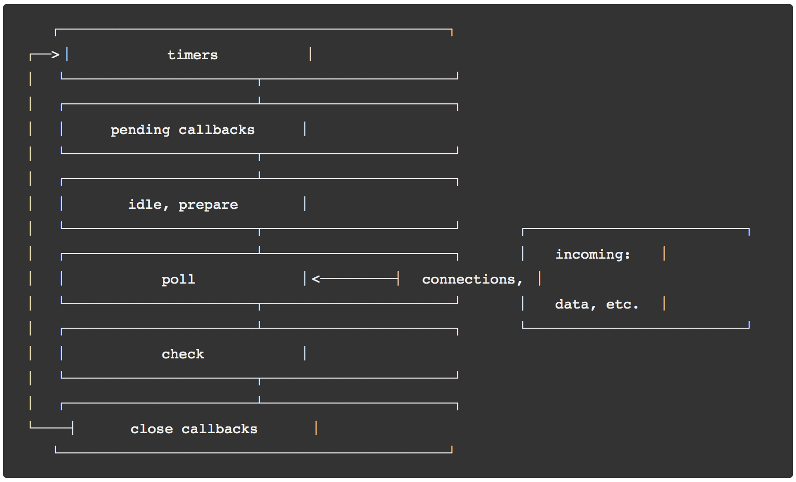

你了解浏览器的事件循环吗？
1. 为什么js在浏览器中有事件循环机制？
js是单线程的 event loop
2. 有哪两种任务？
宏任务：整体代码，setTimeout，setInterval，setImmediate(node + ie)，MessageChannel，requestAnimationFrame,I/O操作，UI rendering，script（整体代码）
微任务：new Promise().then，queueMicrotask，MutationObserver(监听 dom 更新)，process.nextTick(node)
3. 为什么要引入微任务的概念，只有宏任务可以吗？
宏任务：先进先出，每执行一个宏任务后都会把所有的微任务清掉，就是插队。
4. 一个完整的 Event Loop 过程，包括哪些阶段？
a. 执行并出队一个 macro-task。注意如果是初始状态：调用栈空。micro 队列空，macro 队列里有且只有一个 script 脚本（整体代码）。这时首先执行并出队的就是 script 脚本；
b. 全局上下文（script 标签）被推入调用栈，同步代码执行。在执行的过程中，通过对一些接口的调用，可以产生新的 macro-task 与 micro-task，它们会分别被推入各自的任务队列里。这个过程本质上是队列的 macro-task 的执行和出队的过程；
c. 上一步我们出队的是一个 macro-task，这一步我们处理的是 micro-task。但需要注意的是：当 macro-task 出队时，任务是一个一个执行的；而 micro-task 出队时，任务是一队一队执行的（如下图所示）。因此，我们处理 micro 队列这一步，会逐个执行队列中的任务并把它出队，直到队列被清空；
d. 执行渲染操作，更新界面；
e. 检查是否存在 Web worker 任务，如果有，则对其进行处理。
5. Node中的事件循环和浏览器中的事件循环有什么区别？
node v10 之后与浏览器中的事件循环趋同，这里的趋同指的是宏任务的执行机制。v10 之前不一样。
node v10 之前，清空当前阶段对应宏任务队列里的所有任务，而浏览器的宏任务队列是一个一个清空的，每个宏任务之间，还会去清空微任务队列。
Node 三个组成部分

应用层：这一层就是我们最熟悉的 Node.js 代码，包括 Node 应用以及一些标准库。
桥接层：Node 底层是用 C++ 来实现的。桥接层负责封装底层依赖的 C++ 模块的能力，将其简化为 API 向应用层提供服务。
底层依赖：这里就是最最底层的 C++ 库了，支撑 Node 运行的最基本能力在此汇聚。其中需要特别引起我们注意的就是 V8 和 libuv：
V8 是 JS 的运行引擎，它负责把 JavaScript 代码转换成 C++，然后去跑这层 C++ 代码。
libuv：它对跨平台的异步I/O能力进行封装，Node 中的事件循环就是由
libuv来初始化的。
libuv 中的 Event-Loop 实现
https://nodejs.org/zh-cn/docs/guides/event-loop-timers-and-nexttick/

timers（定时器阶段）：执行 setTimeout 和 setInterval 中定义的回调；
pending callbacks（待定回调阶段）：直译过来是“被挂起的回调”，如果网络I/O或者文件I/O的过程中出现了错误，就会在这个阶段处理错误的回调（比较少见，可以略过）；
idle, prepare：仅系统内部使用。这个阶段我们开发者不需要操心。（可以略过）；
poll（轮询阶段）：重点阶段，这个阶段会执行I/O回调，同时还会检查定时器是否到期；
check（检查阶段）：处理 setImmediate 中定义的回调；
close callbacks（关闭回调函数阶段）：处理一些“关闭”的回调，比如socket.on('close', ...)就会在这个阶段被触发。
Node 事件循环各个阶段
a. 执行全局的 Script 代码（与浏览器无差）；
b. 把微任务队列清空：注意，Node 清空微任务队列的手法比较特别。在浏览器中，我们只有一个微任务队列需要接受处理；但在 Node 中，有两类微任务队列：next-tick 队列和其它队列。其中这个 next-tick 队列，专门用来收敛
process.nextTick派发的异步任务。在清空队列时，优先清空 next-tick 队列中的任务，随后才会清空其它微任务；c. 开始执行 macro-task（宏任务）。注意，Node 执行宏任务的方式与浏览器不同：在浏览器中，我们每次出队并执行一个宏任务；而在 Node 中，我们每次会尝试清空当前阶段对应宏任务队列里的所有任务（除非达到了系统限制），v10 之后与浏览器一致了；
Poll 阶段对定时器的处理
poll 队列不为空。直接逐个执行队列内的回调并出队、直到队列被清空（或者到达系统上限）为止；
poll 队列本来就是空的。它首先会检查有没有待执行的 setImmediate 任务，如果有，则往下走、进入到 check 阶段开始处理 setImmediate；如果没有 setImmediate 任务，那么再去检查一下有没有到期的 setTimeout 任务需要处理，若有，则跳转到 timers 阶段。
6. 什么是 MutationObserver？
Mutation Observer API 用来监视 DOM 变动。比如节点的增减、属性的变动、文本内容的变动。它是一个微任务。
当你使用 observer 监听多个 DOM 变化时，并且这若干个 DOM 发生了变化，那么 observer 会将变化记录到变化数组中，等待一起都结束了，然后一次性的从变化数组中执行其对应的回调函数。
// Firefox和Chrome早期版本中带有前缀
const MutationObserver = window.MutationObserver || window.WebKitMutationObserver || window.MozMutationObserver
// 选择目标节点
const target = this.$refs.bi;
// 创建观察者对象
const observer = new MutationObserver(function(mutations) {
mutations.forEach(function(mutation) {
console.log('mutation', mutation);
});
});
// 配置观察选项:
const config = { attributes: true, childList: true, characterData: true, attributeFilter: ['class', 'id'] }
// 传入目标节点和观察选项
observer.observe(target, config);
// 停止观察
// observer.disconnect();
config 参数
| 属性 | 描述 |
|---|---|
| childList | 子节点 |
| attributes | 属性 |
| characterData | 节点内容或节点文本 |
| subtree | 后代节点 |
| attributeOldValue | 表示观察attributes变动时，是否需要记录变动前的属性值 |
| characterDataOldValue | 表示观察characterData变动时，是否需要记录变动前的值 |
| attributeFilter | 特定属性 |
【除了 attributeFilter 的类型为数组，其他参数均为布尔值】
MutationRecord 对象 [例子中打印的 mutation]
type：观察的变动类型（attribute、characterData或者childList）。
target：发生变动的DOM节点。
addedNodes：新增的DOM节点。
removedNodes：删除的DOM节点。
previousSibling：前一个同级节点，如果没有则返回null。
nextSibling：下一个同级节点，如果没有则返回null。
attributeName：发生变动的属性。如果设置了attributeFilter，则只返回预先指定的属性。
oldValue：变动前的值。这个属性只对attribute和characterData变动有效，如果发生childList变动，则返回null。